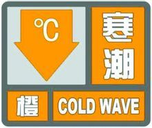

又名寒流，指某一地区冷空气过境后，气温24小时内下降8℃以上，且最低气温下降到4℃以下；或48小时内气温下降10℃以上，且最低气温下降到4℃以下；或72小时内气温连续下降12℃以上，并且最低气温在4℃以下的天气。寒潮是一种大型天气过程，往往引发多种严重的气象灾害。它对人类生产生活的影响，一方面是影响人们和牲畜的正常生活，另一方面却也可以调节空气湿度，维持生态平衡，如冻死一些害虫等。
寒潮（cold wave）是指来自高纬度地区的寒冷空气，在特定天气形势下迅速加强南下，造成沿途大范围的剧烈降温、大风和雨雪天气。这种冷空气南侵过程达到一定强度标准的称为寒潮。 寒潮是一种大型天气过程，往往引发多种严重的气象灾害。由于寒潮出现的地区和季节不同，其强度和危害也不完全一样，但它带来的灾害性天气对工农业生产和百姓日常生活的影响通常都很大，对农业、牧业、交通、电力、甚至人们的健康都有比较大的影响。寒潮天气的影响广泛，造成的灾害也比较严重和多样化，有些灾害是寒潮天气直接造成的结果，如风灾、霜冻害、寒害、道路结冰和积雪等，有些是间接引发的，如低温冷害、空气质量下降等。
寒潮爆发在不同的地域环境下具有不同的特点。在西北沙漠和黄土高原，表现为大风少雪，极易引发沙尘暴天气。在内蒙古草原则为大风、吹雪和低温天气。在华北、黄淮地区，寒潮袭来常常风雪交加。在东北表现为更猛烈的大风、大雪，降雪量为全国之冠。在江南常伴随着寒风苦雨。
寒潮在气象学上有严格的定义和标准，但在不同国家和地区寒潮标准是不一样的。例如中国中央气象台2006年制定的寒潮的标准是：
冷空气的源地主要在：①新地岛以西洋面上。②新地岛以东洋面上。③冰岛以南洋面上。 位于高纬度的北极地区和西伯利亚、蒙古高原一带地方，一年到头受太阳光的斜射，地面接受太阳光的热量很少。尤其是到了冬天，太阳光线南移，北半球太阳光照射的角度越来越小，因此，地面吸收的太阳光热量也越来越少 ，地表面的温度变得很低 。在冬季北冰洋地区，气温经常在 -20℃以下，最低时可到-60℃—— -70℃。1 月份的平均气温常在-40℃以下。由于北极和西伯利亚一带的气温很低，大气的密度就要大大增加，空气不断收缩下沉，使气压增高，这样，便形成一个势力强大、深厚宽广的冷高压气团。当这个冷性高压势力增强到一定程度时，就会像决了堤的海潮一样，一泻千里，汹涌澎湃地向中国袭来，这就是寒潮。每一次寒潮爆发后，西伯利亚的冷空气就要减少一部分，气压也随之降低。但经过一段时间后，冷空气又重新聚集堆积起来，孕育着一次新的寒潮的爆发。
入侵中国的寒潮主要有四条路径：
 根据中国气象局、中央气象台于2010年发布的《中央气象台气象灾害预警发布办法》，寒潮预警信号分为橙色预警、黄色预警、蓝色预警三级。但部分省市根据自己的特点继续沿用2007年的气象灾害预警办法，将寒潮预警信号分为红色预警、橙色预警、黄色预警、蓝色预警四级。
预计未来48小时2个及以上省(区、市)大部地区平均气温或最低气温下降16℃以上并伴有6级及以上大风，长江流域及其以北一半以上地区平均气温或最低气温将下降12℃以上，冬季长江中下游地区(春、秋季江淮地区)最低气温降至4℃、局地降至2℃以下。
预计未来48小时2个及以上省(区、市) 大部地区平均气温或最低气温下降12℃以上并伴有5级及以上大风，长江流域及其以北一半以上地区平均气温或最低气温将下降10℃以上，冬季长江中下游地区(春、秋季江淮地区)最低气温降至4℃以下。
预计未来48小时2个及以上省(区、市)大部地区平均气温或最低气温下降10℃以上并伴有5级及以上大风，长江流域及其以北一半以上地区平均气温或最低气温将下降8℃以上，冬季长江中下游地区(春、秋季江淮地区)最低气温降至4℃以下。